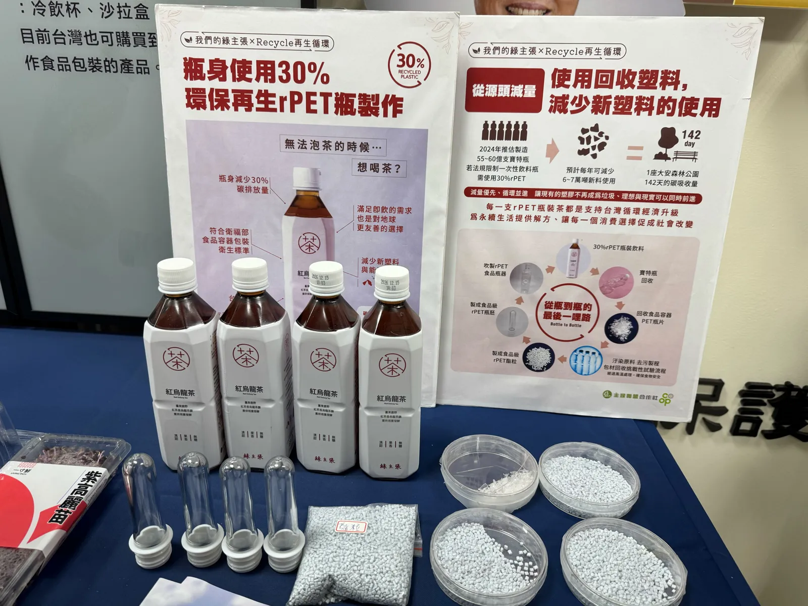

再生材料再次進入生活
經過再生處理的 PET 材料，稱為再生 PET，常以 rPET 表示。依材料品質、加工技術及產品需求，rPET 可以製成聚酯纖維、紡織品、片材、包裝材料及其他產品。這代表回收後的資源有機會再次成為有用的材料。
再利用不是每一個回收瓶都會變成新的寶特瓶。再生材料可能進入不同產品與產業，實際用途取決於材料品質及產品規範。

1. rPET 再生材料
rPET 是 recycled PET 的常見縮寫，指由回收 PET 再生製成的材料。它可能以瓶片、顆粒或其他適合加工的形式供製造業使用。不同來源與製程會造成材料品質差異。
2. 製成聚酯纖維
rPET 可加工成聚酯纖維，進一步製作衣物布料、背包、地毯、填充材料或其他紡織產品。實際產品能使用多少再生材料，會依纖維品質及製造規格而定。
3. 製成片材與其他產品
在適合的品質與加工條件下，rPET 也可製成片材、包裝相關材料、束帶或其他塑膠製品。不同產品對材料透明度、強度、顏色及潔淨程度的要求並不相同。
4. 再次製成食品接觸容器
部分符合特定品質、製程及法規要求的再生 PET，可能用於食品接觸包裝或新的飲料容器。這需要符合相關規範及適用的安全評估，不能把所有 rPET 都視為可直接用於食品包裝。
5. 讓資源再次循環
當再生材料被製成新產品並投入使用，PET 資源便有機會再次進入生活。新產品使用後，若仍符合回收系統及材料處理條件，也可能再次回收與再生，形成循環利用的機會。
本階段流程簡圖
🟢
rPET 再生材料瓶片或再生顆粒🧵
加工製造纖維、片材或其他材料🎒
新產品使用再次進入日常生活再生 PET 的用途須依材料品質、加工技術及產品法規決定。食品接觸用途有額外要求，並非所有 rPET 都適用。
這一站的重點
再利用是讓再生材料成為新產品的原料。不同用途可以延長資源價值，但仍須考慮產品品質、使用情境及後續回收可能性。
小小檢查看看
下列哪一項可能是 rPET 再生材料的用途？